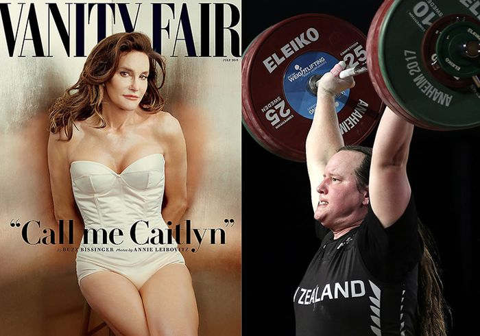
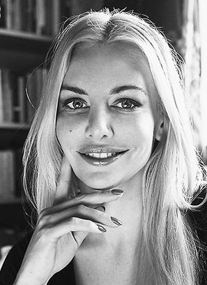

Kajsa Ekis Ekman om lagen som låter människor välja om de är man eller kvinna
Foto: AP, EPA
Tv-kändisen Caityn Jenner föddes som Bruce Jenner. Hon genomförde en könskorrigering 2015. Tyngdlyftaren Gavin Hubard blev Laurel Hubbard och utklassningsvann de australiensiska mästerskapen för kvinnor.
KULTURi går 04:00
Detta är en kulturartikel som är en del av Aftonbladets opinionsjournalistik.

Termen ”gravida kvinnor” bör inte längre användas, rekommenderade den brittiska regeringen nyligen i en skrivelse till FN. I stället bör det heta ”gravida människor” då ordet kvinnor kan förolämpa och stänga ute gravida män.
Och vem vill förolämpa någon?
Alltså tar vi bort ordet kvinna, som alltmer kommit att betraktas som ett snävt och exkluderande ord. Men den som skriver under på inkludering finner snart att hen också på köpet fått en ny definition av kön.
Enligt denna definition, som börjar vinna mark utan att egentligen diskuteras, sitter könet inte i kroppen. Utan i huvudet. Flera länder, däribland Norge och Danmark, har redan gjort lagändringar som tillåter människor att själva välja sitt kön på id-korten utan att någon operation är nödvändig och enligt ett lagförslag ska samma sak snart börja gälla i Sverige. Internationella olympiska kommittén rekommenderar att idrottare får tävla som det kön de själva vill, bara de har levt som detta kön i fyra år och har anpassade hormonnivåer. Brittiska labour-partiet har utfärdat nya riktlinjer för sina könskvoterade listor så att alla som identifierar sig som kvinnor kan ta plats på kvinnolistan.
Det antas generellt att detta är en progressiv förändring: nu reduceras inte könet till biologi och nu kan transpersoner äntligen erkännas i lagen! Formulerandet av kön som en fråga om identitet snarare än ideologi har gjort att diskussionen uteblivit trots att detta är en grundläggande samhällsfråga. För om hela samhället ska ändra sitt synsätt på vad kön är, har det konsekvenser för alla. Vad händer med statistik över könsbaserat våld och löner när vi inte längre kan tala om biologiskt kön? Vad händer med synen på homosexualitet? Vad händer med könsseparatistiska rum som fängelser, omklädningsrum och kvinnojourer? Ja, vad är egentligen kön?
”Att kön blir något man själv får definiera har också lett till oväntade konsekvenser”
Svenska Akademiens ordbok definierar en kvinna som ”en vuxen människa av honkön.” För att veta vad honkön är får vi gå till Karolinska Universitetslaboratoriet, som informerar oss att bortsett från de som föds med kromosomavvikelser är skillnaden att ”kvinnor har normalt två X-kromosomer, XX, medan män har en X och en Y kromosom, XY.” I förlängningen av detta ligger också den likhetsfeministiska drömmen: att kön enbart ska betyda detta och inget annat. Så är dock inte fallet – i det patriarkala samhället har kön också kommit att betyda ett ”bör”. En man bör heta, vara, se ut och bete sig på ett visst sätt och en kvinna på ett annat. Det är dessa könsroller som genusvetenskapen betecknat ”genus” i motsats till ”kön”.
Den nya definitionen vänder på detta. Könet är nu inte en reproduktiv funktion, det är en identitet. Det betyder inte att det skulle vara ett fritt val – enligt vissa läkare och transaktivister är könsidentiteten en essens som existerar bortom socialisering och kropp. Transaktivisten och författaren Julia Serano menar att det finns aspekter av kvinnlighet som ”är naturliga och kan föregå socialisering och existera bortom biologiskt kön”. Det är en idealistisk definition i den meningen att tanken regerar över kroppen, känslan ska alltså besluta vilket kön någon tillhör och kroppen ska omformas efter det. Det talas inte längre om könsbyte, utan om könskorrigerande eller könsbekräftande operationer. Att säga ”byte” av kön låter ana att det tidigare fanns ett annat kön i kroppen, medan den som bekräftar sitt kön enbart låter kroppen nicka jakande till det rätta könet – det som finns i huvudet.
Vem kan då avgöra vilket kön någon egentligen tillhör? Ofta blir samma könsroller som feminister vill bort ifrån nu själva beviset för att någon tillhör ett visst kön. I Läkartidningen hävdar överläkarna Louise Frisén, Per-Anders Rydelius och Arne Söder att könsidentitet är medfödd och att ”7 procent av pojkar uppfattas som extremt flickaktiga och något färre flickor som extremt pojkaktiga”. Vad sjutton menas? Vem uppfattar och kartlägger barns beteende efter kön?
Enligt den amerikanska organisationen TransYouthProject är en pojke som inte avskyr prinsessklänningar ”könsavvikande” och bör genomgå en utredning om könsidentitet. Om han dessutom vill ha långt hår, leker med flickor och dras till blinkande rosa skor, är han förmodligen en flicka enligt organisationen. Han kan då behandlas med pubertetsblockeraren Depot Lupron i form av sprutor i musklerna var tredje månad, alternativt få ett Histrelin-implantat inopererat i överarmen som utsöndrar testosteronhämmande medel.
Hittills har det funnits en åldersgräns för behandling, men alltfler läkare vill ta bort den. Feministiskt Initiativ vill att åldersgränsen för underlivskirurgi ska avskaffas och att det ska räcka med ”barnets vilja och bästa tillsammans med en vårdnadshavares samtycke”.

Få kan förneka att det finns barn som starkt upplever sig tillhöra det andra könet och som vantrivs i sin könsroll, och att det kan vara fruktansvärt grymt att växa upp i ett samhälle som straffar avvikande barn. Den som viftar bort detta som ett påhitt borde läsa biografier av transpersoner, som sjuttiotalets Mario Martino eller vår tids Caitlyn Jenner som beskriver en livslång känsla av att inte passa in och en befrielse den dag de hittar sitt rätta jag.
Kajsa Ekis Ekman, debattör.
Foto: PATRICIA REYES
Men här finns flera frågor. Hur etiskt är det att operera bort könsorganen på barn som inte har förmåga att överblicka konsekvenserna? Och riskerar inte denna ”progressiva” hållning att i stället bli till en extremt konservativ syn på kön – bara att då samhället förut tog bort klänningarna från barn med penis, nu behåller klänningen men tar bort penisen? Könsrollerna bevaras, men underlivet ska bort. Kvar är dock idén om att en person med penis ej bör ha klänning, vilket inte är frigörelse från biologism utan motsatsen.
Att kön blir något man själv får definiera har också lett till oväntade konsekvenser, som att våldtäktsmän kan placeras på kvinnofängelser – vilket hänt i England där bland annat Martin Ponting, dömd för två våldtäkter, placerats på ett kvinnofängelse efter att ha bytt kön. Men framför allt har denna förändring lett till att personer födda som män gått fram med stormsteg i kvinnors värld. I amerikanska boxningsringar, italienska volleybolligor och kanadensiska cykellopp tävlar personer som fötts som män i damklasserna.
”Kön måste förstås både som en materiell verklighet och som en social konstruktion”
De australiensiska tyngdlyftarmästerskapen 2017 vanns av Laurel Hubbard, som för tio år sedan var en man och tävlade under namnet Gavin Hubbard. Som man var Hubbard inte så framgångsrik – som kvinna lyfte hon 19 kilo mer än tvåan. Till Årets kvinna i USA 2015 utsågs Caitlyn Jenner, som bara året innan var en man. Årets bäst betalda kvinnliga vd i USA 2013 blev Martine Rothblatt, också född som man. Motsatsen är dock svårt att hitta exempel på. Få kvinnofödda gör framgång i männens värld. Den vanligaste rubriken om en transman förra året gick ut på att han var gravid.
Vad detta sänder för signaler till kvinnor är ju att för att nå positionerna som Årets kvinna, Årets bäst betalda kvinna och så vidare, borde vi ha fötts som män – precis vad kvinnor alltid fått höra, bara att nu kan vi förpassas till andra plats även i vår egen grupp. Att ta upp detta till diskussion har dock blivit snudd på omöjligt. Att tala om skillnader mellan de som är födda som män och de som är födda som kvinnor – feminismens grundtes – anses nu per definition vara transfobi.
Feminister som anklagas för transfobi utsätts för drev, dödshot, våldtäktshot, bojkotter och avsked. Lesbiska kvinnor som inte vill ligga med personer med penis kallas transfober på anglosaxiska sociala medier, då en penis anses vara en ”kvinnlig penis” om den sitter på en transkvinna. De idrottskvinnor som har invändningar mot orättvisa villkor får höra att de ska vara tysta då de har ”cis-privilegier” – som om det vore en fördel att födas som kvinna.
Ofta ursäktas dessa aggressioner med att transpersoner är en otroligt utsatt grupp, som har höga självmordssiffror och löper stor risk att drabbas av våld och hatbrott. Helt sant. Men det är något konstigt här – trots att det är män som utför så gott som alla vålds- och hatbrott mot transpersoner, är det kvinnor som skuldbeläggs, och detta bara för att de skriver och tänker kring kön. Måste alla männi-skor således skriva under på att kön sitter i hjärnan, för att människor inte ska må dåligt? Så kan det inte vara. Att kräva respekt, mänskliga rättigheter och ett slut på våld mot transpersoner är en förbannad självklarhet – att för den skull låtsas att det är exakt samma sak att ha fötts som kvinna och att ha blivit det vid vuxen ålder är något helt annat.
För om kroppar inte betyder något, om uppfostran inte betyder något, varför betyder då kön alls något? Förståelsen av könet som både materiell verklighet och social konstruktion är central för socialistisk feminism. När våra kroppar producerar spermier eller ägg sker detta oavsett vad vi tycker eller kallar det, vilket gör kön annorlunda än ras/etnicitet, som helt saknar funktion bortom samhällets dominanssystem.
Det är fullt möjligt att tänka sig ett samhälle där etnicitet inte är relevant, och det finns lika många etniciteter som ett samhälle bestämmer sig för. Trots detta behandlas etnicitet som något fast och oöverskridbart i samtida västerländsk diskurs. Se bara vad som hände då NAACP-ledaren Rachel Dolezals föräldrar gick ut offentligt och berättade att hon var vit. Trots att hon levt som svart i åratal, forskat och hållit föreläsningar om svarthet, ”var” hon inte svart, menade en enig befolkning.
Men okej. Säg att vi gör kön, men inte etnicitet, till något vi själva väljer. Vi frågar våra barn vad de känner sig som och ser till att de hamnar i rätt kategori, eller så skapar vi fler kategorier. Det kanske leder till större frihet för alla. Frågan är då vad vi gör med den halva av mänskligheten som föds med XX-kromosomer och som har gemensamt att de får bröst, vagina, mens och kan (oftast) bli gravida. Den grupp som riskerar i högre grad att aborteras, könsstympas, nekas skolgång, våldtas, giftas bort som barn, misshandlas i hemmet, få lägre lön, utsättas för sexuella trakasserier, diskriminering på arbetsmarknaden och utföra större delen av hemarbetet – ska denna grupp inte ha något eget namn alls?